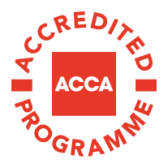

Course overview
Financial careers are evolving fast. While AI can handle the routine tasks, today's finance professionals need to be communicators, problem solvers, strategic advisors, and ethical decision-makers. Our programme prepares you for this reality.
From day one, you'll apply accounting principles to real scenarios from actual companies. This hands-on approach means you'll graduate ready to hit the ground running, not just with theoretical knowledge but practical experience that employers seek.
You'll benefit from our close-knit learning environment where lecturers know you by name and provide tailored guidance on your journey toward professional status. Many of our academics are qualified Chartered Accountants who bring current industry practices directly into the classroom.
Our degree offers exemptions from four professional accounting bodies, including the maximum exemption from up to nine papers from the Association of Chartered Certified Accountants (ACCA).
Why choose Winchester
Fast-track to qualification
Get a head start on your professional journey with our maximum 9 ACCA exemptions.
Learn from industry experts
Practising Chartered Accountants who know what employers want.
Apply your knowledge
To real financial challenges through case studies and industry simulations.
97% student satisfaction
With the teaching and learning resources on this course.
National Student Survey 2026
Network with employers
Opportunities to connect at our finance-focused careers events.
Skills beyond the numbers
Develop the human side of accounting with communication, creativity and critical thinking.
{{ ukCardTag }}
UK students
Apply through UCAS using the course code NN34.
Apply now (for UK students){{ intlCardTag }}
International students
Apply through our partner, Oxford International.
Apply now (for International students)Course details
At Winchester, we transform you into finance professionals who are ready for the modern workplace. Our approach balances academic rigour with practical skills in a supportive environment where your growth matters.
While traditional accounting programmes rely heavily on exams and theory, we embed real-world application throughout your learning. You’ll master the technical requirements needed for professional exemptions (with most accredited modules requiring 70% exam assessment), but we also offer project-based alternatives like Digital Finance, Data Analysis, and Financial Modelling for students who thrive on practical projects.
You are taught primarily through a combination of lectures, seminars, and workshops, allowing opportunities to discuss and develop your understanding of topics in smaller groups to become a confident learner.
{{ year.heading }}
{{ year.intro }}
Your study time this year:
- {{ yh.total }} hours in total
- {{ yh.teaching }} hours of teaching, learning and assessment
- {{ yh.independent }} hours of independent learning
Teaching hours
All class based teaching takes places between 9am – 6pm, Monday to Friday during term time. Wednesday afternoons are kept free from timetabled teaching for personal study time and for sports clubs and societies to train, meet and play matches. There may be some occasional learning opportunities (for example, an evening guest lecturer or performance) that take places outside of these hours for which you will be given forewarning.
Assessment
Our validated courses may adopt a range of means of assessing your learning. An indicative, and not necessarily comprehensive, list of assessment types you might encounter includes essays, portfolios, supervised independent work, presentations, written exams, or practical performances.
We ensure all students have an equal opportunity to achieve module learning outcomes. As such, where appropriate and necessary, students with recognised disabilities may have alternative assignments set that continue to test how successfully they have met the module’s learning outcomes. Further details on assessment types used on the course you are interested in can be found on the course page, by attending an Open Day or Open Evening, or contacting our teaching staff.
The assessment balance between examination and coursework depends to some extent on the optional modules you choose. The approximate percentage of this year assessed by different assessment modes is:
- Coursework: {{ yh.cw }}
- Written exams: {{ yh.ex }}
- Practical: {{ yh.pr }}
You won't have timetabled teaching during your placement year, as you'll be working with your employer.
Modules
-
{{ pt.title }}
{{ pt.text }}
{{ year.note }}
Hours are indicative. Modules are correct at the time of publishing and may change.
Entry requirements
What you need depends on where you're applying from.
{{ entry.eyebrow }}
{{ entry.heading }}
{{ entry.intro }}
For UK Year 12 and 13 students
Pathways Programme
Get to know your subject and university life before you arrive, with taster lectures, practical exercises and personalised careers guidance. If you're eligible and complete the pathway, you'll receive an adjusted offer.
Register for the Pathways ProgrammeAdmissions
Scholarships and bursaries
We have a variety of scholarships and bursaries available to support you financially with the cost of your course. See if you're eligible today.
See our scholarships and bursaries
Professional body accreditations
Our BA (Hons) Accounting and Finance programme is accredited by prestigious professional bodies known for their commitment to excellence and maintaining the highest standards. This ensures that your experience at the University of Winchester is of the highest quality, aligned with industry best practices. It also helps to boost your employability and can give you exemptions from some professional exams as follows:
-

ICAEW Partner in Learning
The University of Winchester is recognised as an Institute of Chartered Accountants in England and Wales (ICAEW) Partner in Learning, working with ICAEW in the professional development of students. This allows you to apply for exemption from some modules when studying for the professional chartered accountant (ACA) qualification after graduating.
-

ACCA accredited
This degree is accredited by the Association of Chartered Certified Accountants and you can apply for up to the maximum exemption from 9 modules when studying for the professional qualification after graduating.
-

CIMA
Chartered Institute of Management Accountants (CIMA) accreditation will exempt you from the certificate and operational level modules of its professional syllabus.
-

CIPFA
Our programme allows you the opportunity to be recognised for exemption against specific examinations when studying for the Professional Chartered Public Finance Accountant (CIPFA) qualification after graduating.
Facilities
Winchester Business School facilities
Explore the spaces and rooms where you could be studying.
- The Stripe Auditorium
- West Downs Classroom
- West Downs Library

Career prospects
A degree in Accounting and Finance from Winchester opens doors to diverse and rewarding career paths. Our graduates are sought after for their combination of technical expertise, professional exemptions, and well-developed interpersonal skills.
Many of our alumni have secured positions at prestigious organisations including the "Big Four" accounting firms, major corporations like Next and Tesco, and public sector bodies such as HMRC. The roles they take on are equally varied – from audit trainees and tax specialists to financial analysts, management accountants, and general business managers.
The flexibility of our degree prepares you for multiple career directions:
- Professional practice: Fast-track your journey to becoming a chartered accountant with our extensive professional exemptions.
- Corporate finance: Apply your skills in treasury, financial analysis, or management accounting roles across all business sectors
- Public sector: Contribute to financial management in government departments, local authorities, or public services.
- Financial services: Pursue opportunities in banking, insurance, or investment management.
- Entrepreneurship: Develop the financial acumen to launch and manage your own business.
From your first year, we focus on building your employability with targeted support, including regular workshops on professional applications and interview techniques, career guidance from academics with industry connections, opportunities to network with employers at our finance-focused careers events, personalised advice on navigating competitive graduate schemes and optional placement experiences that build your professional network.
The accounting profession is evolving rapidly with technological advancement, but this creates opportunities rather than threats for well-prepared graduates. Our programme's emphasis on developing both technical and human skills ensures you'll be positioned to add value in ways that technology cannot – through analysis, interpretation, ethical judgement, and strategic thinking.
Today's finance sector needs professionals who can adapt quickly, make sound judgements, and communicate complex information clearly to non-specialists. Our "Discovering Your Subject" module develops these crucial skills alongside your technical knowledge. You'll learn to see accounting as more than calculations – it's about telling the financial story of a business and helping shape its future.
This comprehensive approach produces graduates who aren't just exam-ready but workplace-ready. You'll emerge with the confidence to apply your knowledge flexibly, the ability to work with diverse teams, and the adaptability to thrive as the profession continues to evolve. That's the Winchester difference – an education that prepares you not just for your first job, but for a fulfilling career.
Pre-approved for a Masters
If you study a Bachelor Honours Degree with us, you will be pre-approved to start a Masters degree at Winchester. To be eligible, you will need to apply by the end of March in the final year of your degree and meet the entry requirements of your chosen Masters degree.
How much will university cost me?
Showing fees for: {{ feeName }}
2027/28 tuition fees
- {{ r.k }}
- {{ r.v }}
To confirm
Additional tuition fee information
*(UK / Channel Islands / Isle of Man / Republic of Ireland) £10,050 for the 27/28 academic year. Fees for future academic years will be determined in line with our Terms and Conditions. The fee is currently subject to a governmental fee cap for each academic year. It is our policy to charge tuition fees at the level of the cap set by the Government. If the cap set by the Government changes, then we may increase our Fees in line with governmental policy.
Remember, you don’t have to pay any of this upfront if you are able to get a tuition fee loan from the UK Government to cover the full cost of your fees each year.
UK Part-Time fees are calculated on a pro rata basis of the full-time fee for a 120 credit course. The fee for a single credit is £83.75 and a 15 credit module is £1,256. Part-time students can take up to a maximum 90 credits per year, so the maximum fee in a given year will be the government permitted maximum fee of £7,530
*(International) £16,700 for the 27/28 academic year. Fees for future academic years will be determined in line with our Terms and Conditions. We decide the annual level of increase of our Tuition Fees by taking into account a range of factors including the cost of delivering the course and change in governmental funding.
International part-time fees are calculated on a pro rata basis of the full-time fee for a 120 credit course. The fee for a single credit is £139.14 and a 15 credit module is £2,087.
Additional costs
As one of our students all of your teaching and assessments are included in your tuition fees, including, lectures/guest lectures and tutorials, seminars, laboratory sessions and specialist teaching facilities. You will also have access to a wide range of student support and IT services.
There might be additional costs you may encounter whilst studying. The following highlights optional costs for this course:
Optional
Core Text: it is recommended that you purchase the latest editions of all of the core textbooks. Many of these texts relate to extensive online material for which you require an access code supplied with the textbook. It is possible for students to purchase second-hand copies where applicable. Indicative cost is £50-£200 per year.
Volunteering and Placements: you may incur travel costs on optional volunteering placements in the third year of study. Indicative cost is £5-£30 per day.
Smart Clothing: you may be expected to dress formally for oral assessments. Costs will vary depending on the students existing wardrobe. Indicative cost is £0-£50.
Trips: you may be asked to contribute a small amount towards travel costs. Indicative cost is £10 per trip.
Scholarships, bursaries and awards
We have a variety of scholarship and bursaries available to support you financially with the cost of your course. To see if you’re eligible, please see our Scholarships and Awards.
Visit student finance
Student stories
Life on the course
“The case studies feel like real work. By my second year I was confident walking into placement interviews and talking about actual numbers.”
Priya, Year 3, BA (Hons) Accounting and Finance
Read more student storiesMeet the course team
Official student data from Discover Uni
Say staff value students views and opinions about the course.
Data from 25 students in Accounting and Finance (Full-time) over the previous two years
Teaching staff have supported my learning well.
Data from 25 students in Accounting and Finance (Full-time) over the previous two years
In work or doing further study 15 months after the course.
Data from 10 students in Accounting and Finance (Full-time)
Uni
Discover Uni is an official source of information on higher education across the UK.
See all course dataAccounting and Finance (Full-time), University of Winchester
Compare related courses
Accounting and Finance
BA (Hons)
- Duration
- 3 years full time
- UCAS code
- NN34
- Typical offer
- 104-120 points
- Location
- Winchester campus
Business Management
BA (Hons)
- Duration
- 3 years full time
- UCAS code
- NP29
- Typical offer
- 104-120 points
- Location
- Winchester campus
Marketing
BA (Hons)
- Duration
- 3 years full time
- UCAS code
- 3R93
- Typical offer
- 112-120 points
- Location
- Winchester campus
Related news

Apply
Ready to start your journey?
Apply through UCAS with code NN34, or come to an open day to meet the course team first.